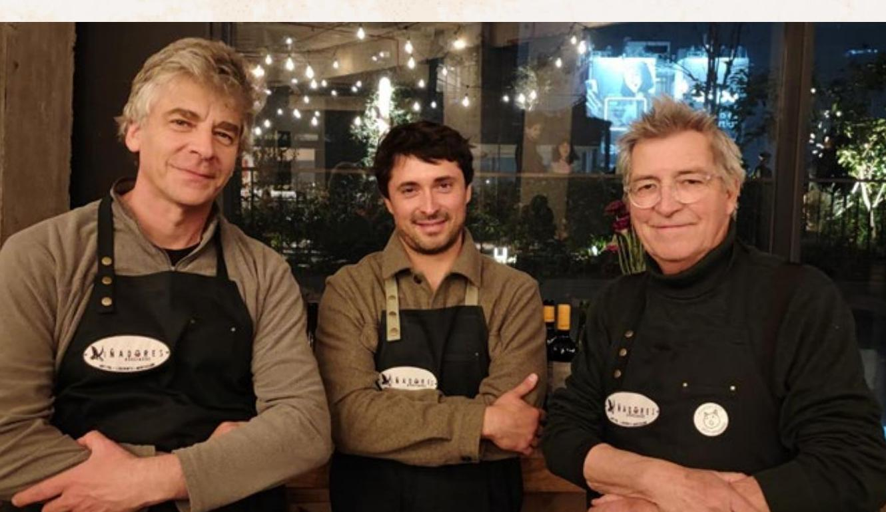
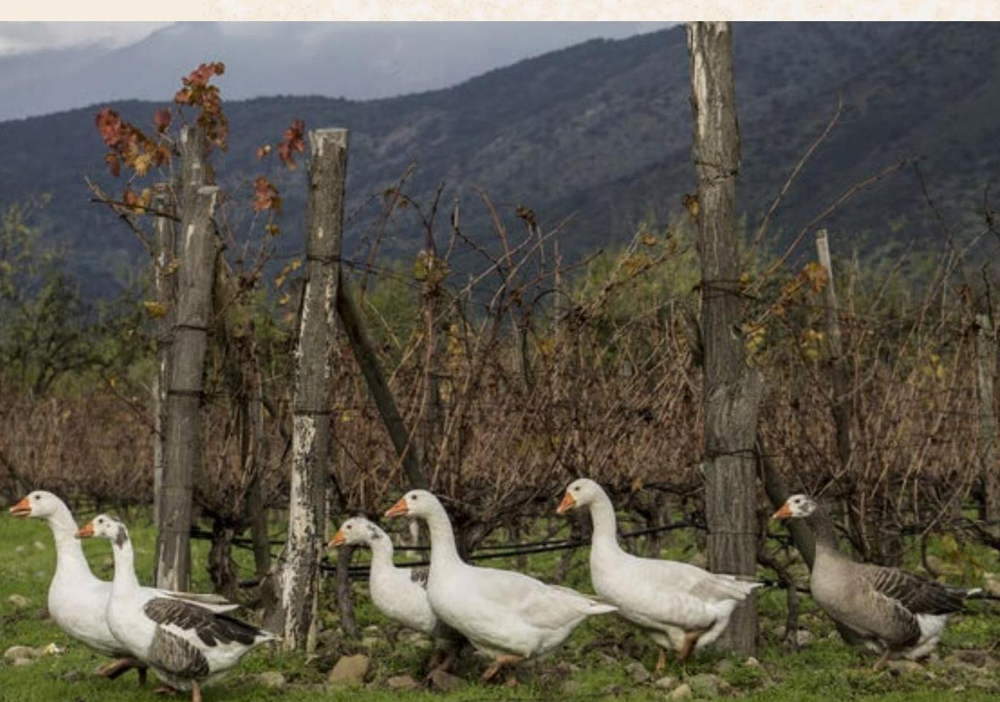

{{ t.home.partnersEyebrow }}
{{ t.home.partnersTitle }}
{{ t.home.partnersBody }}


{{ t.home.wineriesEyebrow }}
{{ t.home.wineriesTitle }}
{{ w.region }} · {{ w.founded }}
{{ w.name }}
{{ t.home.discoverLabel }} →
{{ t.winery.storyTitle }}
{{ currentWinery.story }}
{{ t.winery.founderLabel }}: {{ currentWinery.founders }}
{{ t.winery.philosophyTitle }}
{{ currentWinery.philosophy }}
{{ t.winery.shopTitle }}
{{ currentWinery.name }}
{{ wn.name }}
{{ wn.varietal }}
{{ t.about.eyebrow }}
{{ t.about.title }}
{{ t.about.intro }}
{{ w.name }}
{{ w.region }}
{{ w.email }}
{{ w.phone }}
{{ w.address }}
{{ t.legalEyebrow }}
{{ simplePageTitle }}
{{ simplePageBody }}
{{ t.cart.title }}
{{ t.cart.orderFrom }} {{ cartWinery.name }}
{{ t.cart.empty }}
{{ t.cart.browse }}{{ ci.name }}
{{ ci.varietal }}
{{ ci.qty }}
{{ t.cart.pricingNote }}